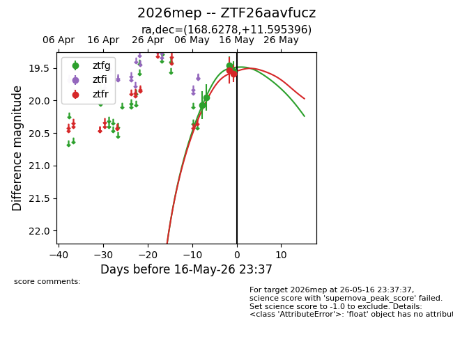
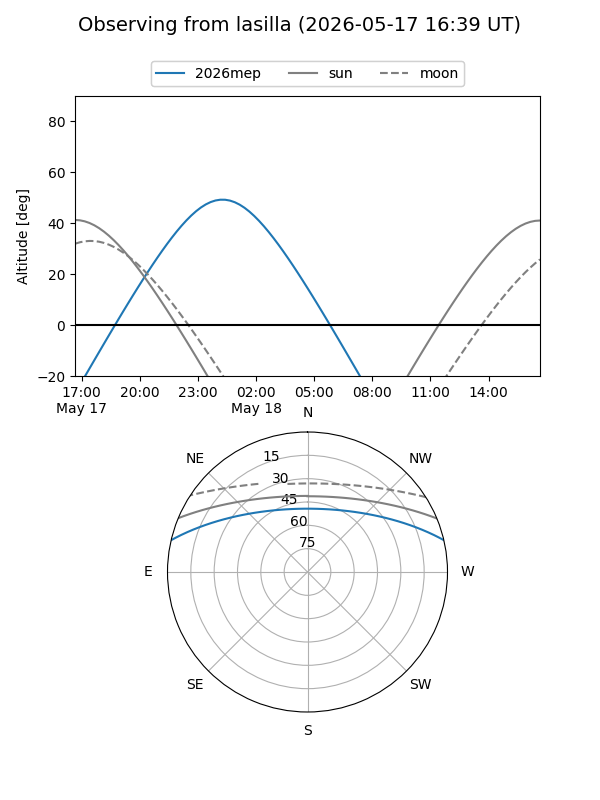
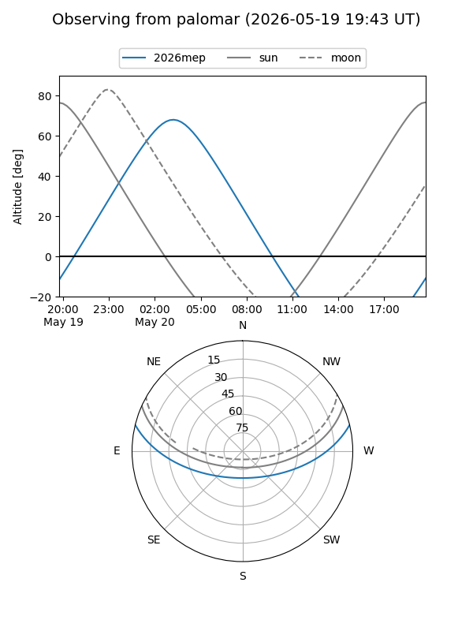
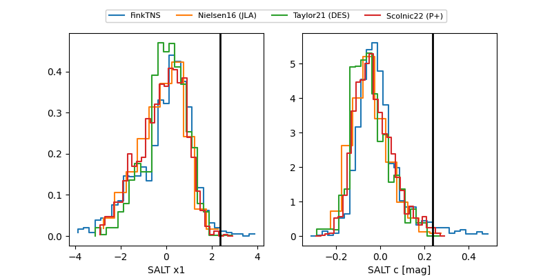

2026mep
Target 2026mep at 2026-05-16 23:40
Aliases and brokers:
FINK: link
Lasair: link
ALeRCE: link
TNS: link
YSE: link
alt names
ZTF26aavfucz (ztf,fink_ztf)
2026mep (tns,yse)
Coordinates:
equatorial (ra, dec) = 168.6278,+11.59540
equatorial (HMS+DMS) = 11:14:30.66,+11:35:43.43
galactic (l, b) = (242.5361,+62.45691)
Flags:
Photometry:
last ztfg=19.54, ztfr=19.59
4 ztfg, 2 ztfr detections
Lightcurve

Visibility


Additional plots
